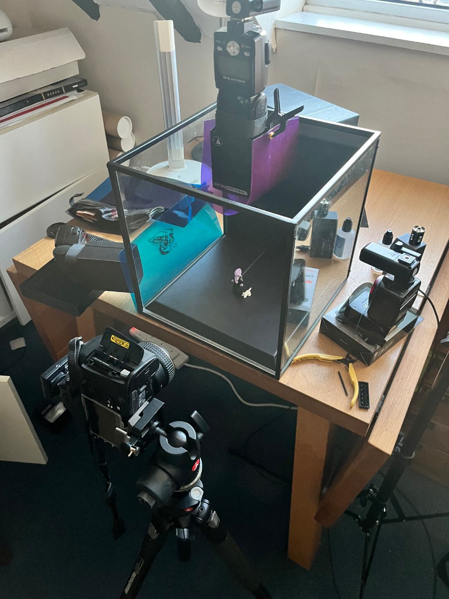

Mind Flayer
So, I see LEGO made some D&D minifigs! I admit I've not been keeping up with LEGO releases for the past few years, but these last weeks I did have the urge to start taking some photographs again so I did a bit of revision.
To my shame, my introduction to the world of D&D was Baldur's Gate 3. I've never played the tabletop game - no idea how it works and too scared to ask. It looks complicated. Taking photos of weird minifigs though, that's much more my thing!
I got lucky with the smoke. It only took (checks Lightroom) ... 150 attempts. And obviously I added a cat, because why not?
 Back
Back

Show Setup
